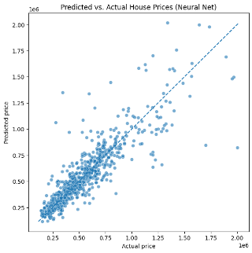
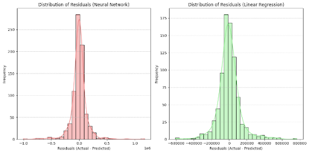

A Partnership with HeroContent: Marketing Pipeline for Lead Generation
Overview: While abroad, a group of 4 students, including myself, were given the opportunity to work with a local Czech Company. We developed a data pipeline (python scripts) using Apify, Playwright, and Azure LLM services to generate U.S. restaurant profiles that included contact information. This was done ahead of a U.S. market expansion as a way to generate potential leads for the Prague-based social media marketing company HeroContent.
Takeaway 1: Atomic Saving! We lost thousands of records (which were created using company-sponsored credits) because we did not implement atomic saving. Save early, and save often, it will eventually save you from a worst nightmare.
Takeaway 2: If you can't explain the high-level pipeline functions in a sentence, look to simplify before you add more features. For this case: We scraped basic Google Maps restaurant info through Apify, then used GPT 4o-Mini to enrich restaurant records with contact info.
A Classic: House Price Prediction
Overview: This was a team project while I was abroad! We trained and compared a linear regression model as a baseline against a PyTorch neural network (132 → 128 → 64 → 1). We did this to predict house sale prices from a Kaggle dataset of 4,140 property records. After preprocessing, one-hot encoding location features, and trimming price outliers, both models reached an R² of about 0.8, with linear regression slightly outperforming the neural net (0.817 vs. 0.806).
Takeaway 1: What increased R² the most for us was actually not model selection, but outlier removal. A given goal for our project was overall strong generalization, so we justified the removal of outliers with the significant jump in R². See the attached slides for our discussion of this point!
Takeaway 2: The majority of our coding time was spent setting up the neural net, all for it to slightly underperform simple linear regression. Simplicity is a feature in itself and should be considered!


Skills & Tools
Languages: Python, SQL, R
Frameworks & libraries: Pandas, NumPy, SciKit Learn, PyTorch, MatPlotLib
Tools: Snowflake, PowerBI, Excel